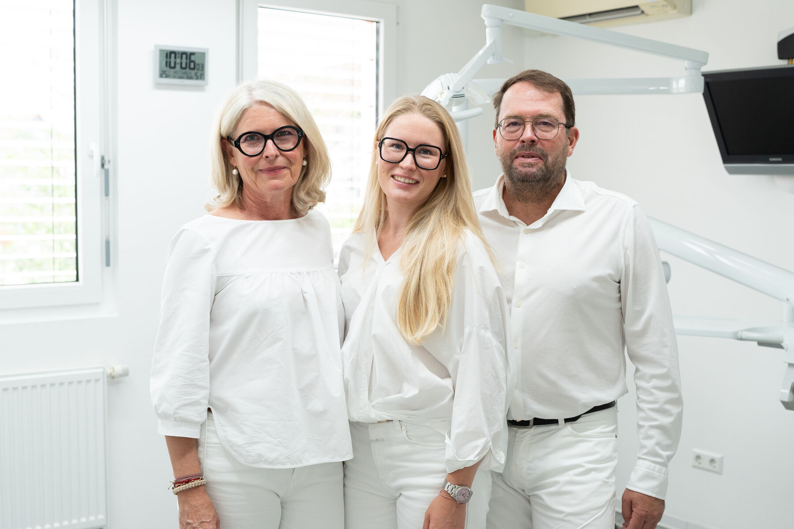

Bewerben
Alles beginnt mit Deiner Bewerbung. Sende Deine Bewerbungsunterlagen an uns, damit wir weitermachen können.
Werde Teil unserer Familienpraxis und arbeite mit moderner Technik, digitalen Prozessen und Menschen, die sich gegenseitig unterstützen.
Werde Teil unserer Familienpraxis und arbeite mit moderner Technik, digitalen Prozessen und Menschen, die sich gegenseitig unterstützen.
Familie Zimmermann
Gemeinschaftspraxis Dres. Zimmermann
Rappenstr. 19
67480 Edenkoben
Direkt am Bahnhof, gute Parksituation
Seit über 30 Jahren stehen wir für moderne Zahnmedizin, persönliche Betreuung und ein vertrauensvolles Miteinander. Als Familienpraxis arbeiten wir mit digitaler Technik und einem eigenen CAD CAM Labor, um Behandlungen effizient und angenehm zu gestalten. Gleichzeitig legen wir großen Wert auf ein herzliches Team, in dem Zusammenarbeit, Respekt und Freude an der täglichen Arbeit selbstverständlich sind.
Bei uns zählt nicht nur fachliche Kompetenz, sondern auch der Mensch dahinter. Wir unterstützen uns gegenseitig, arbeiten auf Augenhöhe und schaffen ein Umfeld, in dem sich jeder weiterentwickeln kann. Gemeinsam sorgen wir dafür, dass sich unsere Patientinnen und Patienten ebenso wohlfühlen wie unser Team.
LeistungenWeitere Benefits kannst Du den jeweiligen Stellen entnehmen.

Familie Zimmermann
info@dres-zimmermann.de
+49 6323 93434
Mit ein paar einfachen Tipps kannst Du Deine Bewerbung optimal vorbereiten und einen guten ersten Eindruck hinterlassen.
Unterlagen sind für den Erstkontakt nicht zwingend notwendig. Ein Lebenslauf wäre aber optimal, um den Bewerbungsprozess zu beschleunigen.
Bitte gib in Deinem Lebenslauf einen Überblick über Deine bisherigen Tätigkeiten, insbesondere über die Aufgabenbereiche Deiner letzten Position.
So läuft Deine Bewerbung bei uns ab, von der Bewerbung bis zum Kennenlerntag. Schritt für Schritt begleiten wir Dich durch den gesamten Prozess.
Alles beginnt mit Deiner Bewerbung. Sende Deine Bewerbungsunterlagen an uns, damit wir weitermachen können.
Nach Deiner Bewerbung rufen wir Dich an und vereinbaren direkt einen Termin für ein persönliches Kennenlernen bei uns.
Lerne uns und unsere Praxis in einem ersten persönlichen Gespräch kennen. Dabei möchten wir mehr über Dich erfahren und offene Fragen klären.
In unserer Praxis hast Du dann die Möglichkeit, Dir einen besseren Eindruck von unserem Team und unserer Arbeit zu verschaffen.
Eine Initiativbewerbung ist jederzeit möglich. Wir lassen uns gerne von den eingereichten Fähigkeiten überzeugen.
Unsere Webseite ist immer auf dem neusten Stand, daher sind alle ausgeschriebenen Stellen aktuell.
Die Daten werden bei uns nur hausintern verarbeitet und nicht an Dritte weitergegeben. Gerne können wir diese auf Wunsch löschen oder für spätere Verfahren berücksichtigen.
In der jeweiligen Stellenanzeige ist ein Bewerbungsformular integriert. Alternativ kann man sich aber auch via E-Mail oder über den Postweg bewerben.
Grundsätzlich legen wir keinen großen Wert auf Noten, viel wichtiger ist uns die Person hinter der Bewerbung.
Die Gemeinschaftspraxis Dres. Zimmermann liegt in der Rappenstr. 19, 67480 Edenkoben, direkt am Bahnhof Edenkoben und mit guter Parksituation. Erreichbar ist die Praxis unter +49 6323 93434 und info@dres-zimmermann.de.
Der Startzeitpunkt der Ausbildung ist in der Stellenausschreibung festgehalten, sollten sich diese ändern, passen wir diese entsprechend an.
Wir schätzen engagierte und motivierte Teamkollegen sehr, daher ist eine Übernahme möglich.
Dann melde Dich einfach bei uns. Wir helfen Dir gerne weiter und freuen uns anschließend auf Deine Bewerbung.
StellenangeboteMit dem Klick wird die Karte von Google geladen. Dabei wird Ihre IP-Adresse an Google übertragen. Mehr dazu in der Datenschutzerklärung.
Gemeinschaftspraxis Dres. Zimmermann
Rappenstr. 19
67480 Edenkoben
Telefon: 0632393434
Telefax: 0632393435
E-Mail: info@dres-zimmermann.de
Dr. Christian Zimmermann, Dr. Sandra Zimmermann (bitte bestätigen)
Berufsbezeichnung:
Zahnarzt
Verliehen in: Deutschland (bitte bestätigen)
Zuständige Kammer: Landeszahnärztekammer Rheinland-Pfalz, Langenbeckstraße 2, 55131 Mainz (bitte bestätigen)
Zuständige Kassenzahnärztliche Vereinigung: KZV Rheinland-Pfalz (bitte bestätigen)
Berufsrechtliche Regelungen: Zahnheilkundegesetz, Heilberufsgesetz Rheinland-Pfalz, Berufsordnung der Landeszahnärztekammer Rheinland-Pfalz; abrufbar über die Kammer (bitte bestätigen)
Wir sind nicht bereit oder verpflichtet, an Streitbeilegungsverfahren vor einer Verbraucherschlichtungsstelle teilzunehmen.
AO Consulting GmbH
Zeiloch 13
76646 Bruchsal
ao-consult.de
Artemjew Photography (bitte Nennung mit dem Fotografen abstimmen)
Als Diensteanbieter sind wir gemäß § 7 Abs.1 DDG für eigene Inhalte auf diesen Seiten nach den allgemeinen Gesetzen verantwortlich. Nach §§ 8 bis 10 DDG sind wir als Diensteanbieter jedoch nicht verpflichtet, übermittelte oder gespeicherte fremde Informationen zu überwachen oder nach Umständen zu forschen, die auf eine rechtswidrige Tätigkeit hinweisen. Verpflichtungen zur Entfernung oder Sperrung der Nutzung von Informationen nach den allgemeinen Gesetzen bleiben hiervon unberührt. Eine diesbezügliche Haftung ist jedoch erst ab dem Zeitpunkt der Kenntnis einer konkreten Rechtsverletzung möglich. Bei Bekanntwerden von entsprechenden Rechtsverletzungen werden wir diese Inhalte umgehend entfernen.
Unser Angebot enthält Links zu externen Websites Dritter, auf deren Inhalte wir keinen Einfluss haben. Deshalb können wir für diese fremden Inhalte auch keine Gewähr übernehmen. Für die Inhalte der verlinkten Seiten ist stets der jeweilige Anbieter oder Betreiber der Seiten verantwortlich. Die verlinkten Seiten wurden zum Zeitpunkt der Verlinkung auf mögliche Rechtsverstöße überprüft. Rechtswidrige Inhalte waren zum Zeitpunkt der Verlinkung nicht erkennbar.
Eine permanente inhaltliche Kontrolle der verlinkten Seiten ist jedoch ohne konkrete Anhaltspunkte einer Rechtsverletzung nicht zumutbar. Bei Bekanntwerden von Rechtsverletzungen werden wir derartige Links umgehend entfernen.
Die durch die Seitenbetreiber erstellten Inhalte und Werke auf diesen Seiten unterliegen dem deutschen Urheberrecht. Die Vervielfältigung, Bearbeitung, Verbreitung und jede Art der Verwertung außerhalb der Grenzen des Urheberrechtes bedürfen der schriftlichen Zustimmung des jeweiligen Autors bzw. Erstellers. Downloads und Kopien dieser Seite sind nur für den privaten, nicht kommerziellen Gebrauch gestattet.
Soweit die Inhalte auf dieser Seite nicht vom Betreiber erstellt wurden, werden die Urheberrechte Dritter beachtet. Insbesondere werden Inhalte Dritter als solche gekennzeichnet. Sollten Sie trotzdem auf eine Urheberrechtsverletzung aufmerksam werden, bitten wir um einen entsprechenden Hinweis. Bei Bekanntwerden von Rechtsverletzungen werden wir derartige Inhalte umgehend entfernen.
Die folgenden Hinweise geben einen einfachen Überblick darüber, was mit Ihren personenbezogenen Daten passiert, wenn Sie diese Website besuchen. Personenbezogene Daten sind alle Daten, mit denen Sie persönlich identifiziert werden können. Ausführliche Informationen zum Thema Datenschutz entnehmen Sie unserer unter diesem Text aufgeführten Datenschutzerklärung.
Die Datenverarbeitung auf dieser Website erfolgt durch den Websitebetreiber. Dessen Kontaktdaten können Sie dem Abschnitt „Hinweis zur verantwortlichen Stelle“ in dieser Datenschutzerklärung entnehmen.
Ihre Daten werden zum einen dadurch erhoben, dass Sie uns diese mitteilen. Hierbei kann es sich z. B. um Daten handeln, die Sie in ein Bewerbungsformular eingeben.
Andere Daten werden automatisch oder nach Ihrer Einwilligung beim Besuch der Website durch unsere IT-Systeme erfasst. Das sind vor allem technische Daten (z. B. Internetbrowser, Betriebssystem oder Uhrzeit des Seitenaufrufs). Die Erfassung dieser Daten erfolgt automatisch, sobald Sie diese Website betreten.
Ein Teil der Daten wird erhoben, um eine fehlerfreie Bereitstellung der Website zu gewährleisten. Andere Daten können zur Analyse Ihres Nutzerverhaltens verwendet werden. Sofern über die Website Verträge geschlossen oder angebahnt werden können, werden die übermittelten Daten auch für Vertragsangebote, Bestellungen oder sonstige Auftragsanfragen verarbeitet.
Sie haben jederzeit das Recht, unentgeltlich Auskunft über Herkunft, Empfänger und Zweck Ihrer gespeicherten personenbezogenen Daten zu erhalten. Sie haben außerdem ein Recht, die Berichtigung oder Löschung dieser Daten zu verlangen. Wenn Sie eine Einwilligung zur Datenverarbeitung erteilt haben, können Sie diese Einwilligung jederzeit für die Zukunft widerrufen. Außerdem haben Sie das Recht, unter bestimmten Umständen die Einschränkung der Verarbeitung Ihrer personenbezogenen Daten zu verlangen. Des Weiteren steht Ihnen ein Beschwerderecht bei der zuständigen Aufsichtsbehörde zu.
Hierzu sowie zu weiteren Fragen zum Thema Datenschutz können Sie sich jederzeit an uns wenden.
Beim Besuch dieser Website kann Ihr Surf-Verhalten statistisch ausgewertet werden. Das geschieht vor allem mit sogenannten Analyseprogrammen. Auf dieser Website geschieht das ausschließlich nach Ihrer Einwilligung über das Einwilligungsfenster.
Detaillierte Informationen zu diesen Analyseprogrammen finden Sie in der folgenden Datenschutzerklärung.
Wir hosten die Inhalte unserer Website bei folgendem Anbieter:
Anbieter ist die Raidboxes GmbH, Hafenstr. 32, 48153 Münster (nachfolgend Raidboxes). Wenn Sie unsere Website besuchen, erfasst der Hoster verschiedene Logfiles inklusive Ihrer IP-Adressen.
Details entnehmen Sie der Datenschutzerklärung des Hosters: https://raidboxes.io/legal/privacy/.
Die Verwendung des Hosters erfolgt auf Grundlage von Art. 6 Abs. 1 lit. f DSGVO. Wir haben ein berechtigtes Interesse an einer möglichst zuverlässigen Darstellung unserer Website. Sofern eine entsprechende Einwilligung abgefragt wurde, erfolgt die Verarbeitung ausschließlich auf Grundlage von Art. 6 Abs. 1 lit. a DSGVO und § 25 Abs. 1 TDDDG, soweit die Einwilligung die Speicherung von Cookies oder den Zugriff auf Informationen im Endgerät des Nutzers (z. B. für Device-Fingerprinting) im Sinne des TDDDG umfasst. Die Einwilligung ist jederzeit widerrufbar.
Die Betreiber dieser Seiten nehmen den Schutz Ihrer persönlichen Daten sehr ernst. Wir behandeln Ihre personenbezogenen Daten vertraulich und entsprechend den gesetzlichen Datenschutzvorschriften sowie dieser Datenschutzerklärung.
Wenn Sie diese Website benutzen, werden verschiedene personenbezogene Daten erhoben. Personenbezogene Daten sind Daten, mit denen Sie persönlich identifiziert werden können. Die vorliegende Datenschutzerklärung erläutert, welche Daten wir erheben und wofür wir sie nutzen. Sie erläutert auch, wie und zu welchem Zweck das geschieht.
Wir weisen darauf hin, dass die Datenübertragung im Internet (z. B. bei der Kommunikation per E-Mail) Sicherheitslücken aufweisen kann. Ein lückenloser Schutz der Daten vor dem Zugriff durch Dritte ist nicht möglich.
Die verantwortliche Stelle für die Datenverarbeitung auf dieser Website ist:
Gemeinschaftspraxis Dres. Zimmermann
Rappenstr. 19
67480 Edenkoben
Telefon: 0632393434
E-Mail: info@dres-zimmermann.de
Verantwortliche Stelle ist die natürliche oder juristische Person, die allein oder gemeinsam mit anderen über die Zwecke und Mittel der Verarbeitung von personenbezogenen Daten (z. B. Namen, E-Mail-Adressen o. Ä.) entscheidet.
Soweit innerhalb dieser Datenschutzerklärung keine speziellere Speicherdauer genannt wurde, verbleiben Ihre personenbezogenen Daten bei uns, bis der Zweck für die Datenverarbeitung entfällt. Wenn Sie ein berechtigtes Löschersuchen geltend machen oder eine Einwilligung zur Datenverarbeitung widerrufen, werden Ihre Daten gelöscht, sofern wir keine anderen rechtlich zulässigen Gründe für die Speicherung Ihrer personenbezogenen Daten haben (z. B. steuer- oder handelsrechtliche Aufbewahrungsfristen); im letztgenannten Fall erfolgt die Löschung nach Fortfall dieser Gründe.
Sofern Sie in die Datenverarbeitung eingewilligt haben, verarbeiten wir Ihre personenbezogenen Daten auf Grundlage von Art. 6 Abs. 1 lit. a DSGVO bzw. Art. 9 Abs. 2 lit. a DSGVO, sofern besondere Datenkategorien nach Art. 9 Abs. 1 DSGVO verarbeitet werden. Im Falle einer ausdrücklichen Einwilligung in die Übertragung personenbezogener Daten in Drittstaaten erfolgt die Datenverarbeitung außerdem auf Grundlage von Art. 49 Abs. 1 lit. a DSGVO. Sofern Sie in die Speicherung von Cookies oder in den Zugriff auf Informationen in Ihr Endgerät (z. B. via Device-Fingerprinting) eingewilligt haben, erfolgt die Datenverarbeitung zusätzlich auf Grundlage von § 25 Abs. 1 TDDDG. Die Einwilligung ist jederzeit widerrufbar. Sind Ihre Daten zur Vertragserfüllung oder zur Durchführung vorvertraglicher Maßnahmen erforderlich, verarbeiten wir Ihre Daten auf Grundlage des Art. 6 Abs. 1 lit. b DSGVO. Des Weiteren verarbeiten wir Ihre Daten, sofern diese zur Erfüllung einer rechtlichen Verpflichtung erforderlich sind, auf Grundlage von Art. 6 Abs. 1 lit. c DSGVO. Die Datenverarbeitung kann ferner auf Grundlage unseres berechtigten Interesses nach Art. 6 Abs. 1 lit. f DSGVO erfolgen. Über die jeweils im Einzelfall einschlägigen Rechtsgrundlagen wird in den folgenden Absätzen dieser Datenschutzerklärung informiert.
Im Rahmen unserer Geschäftstätigkeit arbeiten wir mit verschiedenen externen Stellen zusammen. Dabei ist teilweise auch eine Übermittlung von personenbezogenen Daten an diese externen Stellen erforderlich. Wir geben personenbezogene Daten nur dann an externe Stellen weiter, wenn dies im Rahmen einer Vertragserfüllung erforderlich ist, wenn wir gesetzlich hierzu verpflichtet sind (z. B. Weitergabe von Daten an Steuerbehörden), wenn wir ein berechtigtes Interesse nach Art. 6 Abs. 1 lit. f DSGVO an der Weitergabe haben oder wenn eine sonstige Rechtsgrundlage die Datenweitergabe erlaubt. Beim Einsatz von Auftragsverarbeitern geben wir personenbezogene Daten unserer Kunden nur auf Grundlage eines gültigen Vertrags über Auftragsverarbeitung weiter. Im Falle einer gemeinsamen Verarbeitung wird ein Vertrag über gemeinsame Verarbeitung geschlossen.
Viele Datenverarbeitungsvorgänge sind nur mit Ihrer ausdrücklichen Einwilligung möglich. Sie können eine bereits erteilte Einwilligung jederzeit widerrufen. Die Rechtmäßigkeit der bis zum Widerruf erfolgten Datenverarbeitung bleibt vom Widerruf unberührt. Einwilligungen, die Sie über das Einwilligungsfenster dieser Website erteilt haben, können Sie jederzeit über den Link „Cookie-Einstellungen“ in der Fußzeile widerrufen.
WENN DIE DATENVERARBEITUNG AUF GRUNDLAGE VON ART. 6 ABS. 1 LIT. E ODER F DSGVO ERFOLGT, HABEN SIE JEDERZEIT DAS RECHT, AUS GRÜNDEN, DIE SICH AUS IHRER BESONDEREN SITUATION ERGEBEN, GEGEN DIE VERARBEITUNG IHRER PERSONENBEZOGENEN DATEN WIDERSPRUCH EINZULEGEN; DIES GILT AUCH FÜR EIN AUF DIESE BESTIMMUNGEN GESTÜTZTES PROFILING. DIE JEWEILIGE RECHTSGRUNDLAGE, AUF DENEN EINE VERARBEITUNG BERUHT, ENTNEHMEN SIE DIESER DATENSCHUTZERKLÄRUNG. WENN SIE WIDERSPRUCH EINLEGEN, WERDEN WIR IHRE BETROFFENEN PERSONENBEZOGENEN DATEN NICHT MEHR VERARBEITEN, ES SEI DENN, WIR KÖNNEN ZWINGENDE SCHUTZWÜRDIGE GRÜNDE FÜR DIE VERARBEITUNG NACHWEISEN, DIE IHRE INTERESSEN, RECHTE UND FREIHEITEN ÜBERWIEGEN ODER DIE VERARBEITUNG DIENT DER GELTENDMACHUNG, AUSÜBUNG ODER VERTEIDIGUNG VON RECHTSANSPRÜCHEN (WIDERSPRUCH NACH ART. 21 ABS. 1 DSGVO).
WERDEN IHRE PERSONENBEZOGENEN DATEN VERARBEITET, UM DIREKTWERBUNG ZU BETREIBEN, SO HABEN SIE DAS RECHT, JEDERZEIT WIDERSPRUCH GEGEN DIE VERARBEITUNG SIE BETREFFENDER PERSONENBEZOGENER DATEN ZUM ZWECKE DERARTIGER WERBUNG EINZULEGEN; DIES GILT AUCH FÜR DAS PROFILING, SOWEIT ES MIT SOLCHER DIREKTWERBUNG IN VERBINDUNG STEHT. WENN SIE WIDERSPRECHEN, WERDEN IHRE PERSONENBEZOGENEN DATEN ANSCHLIESSEND NICHT MEHR ZUM ZWECKE DER DIREKTWERBUNG VERWENDET (WIDERSPRUCH NACH ART. 21 ABS. 2 DSGVO).
Im Falle von Verstößen gegen die DSGVO steht den Betroffenen ein Beschwerderecht bei einer Aufsichtsbehörde, insbesondere in dem Mitgliedstaat ihres gewöhnlichen Aufenthalts, ihres Arbeitsplatzes oder des Orts des mutmaßlichen Verstoßes zu. Das Beschwerderecht besteht unbeschadet anderweitiger verwaltungsrechtlicher oder gerichtlicher Rechtsbehelfe.
Sie haben das Recht, Daten, die wir auf Grundlage Ihrer Einwilligung oder in Erfüllung eines Vertrags automatisiert verarbeiten, an sich oder an einen Dritten in einem gängigen, maschinenlesbaren Format aushändigen zu lassen. Sofern Sie die direkte Übertragung der Daten an einen anderen Verantwortlichen verlangen, erfolgt dies nur, soweit es technisch machbar ist.
Sie haben im Rahmen der geltenden gesetzlichen Bestimmungen jederzeit das Recht auf unentgeltliche Auskunft über Ihre gespeicherten personenbezogenen Daten, deren Herkunft und Empfänger und den Zweck der Datenverarbeitung und ggf. ein Recht auf Berichtigung oder Löschung dieser Daten. Hierzu sowie zu weiteren Fragen zum Thema personenbezogene Daten können Sie sich jederzeit an uns wenden.
Sie haben das Recht, die Einschränkung der Verarbeitung Ihrer personenbezogenen Daten zu verlangen. Hierzu können Sie sich jederzeit an uns wenden. Das Recht auf Einschränkung der Verarbeitung besteht in folgenden Fällen:
Wenn Sie die Verarbeitung Ihrer personenbezogenen Daten eingeschränkt haben, dürfen diese Daten (von ihrer Speicherung abgesehen) nur mit Ihrer Einwilligung oder zur Geltendmachung, Ausübung oder Verteidigung von Rechtsansprüchen oder zum Schutz der Rechte einer anderen natürlichen oder juristischen Person oder aus Gründen eines wichtigen öffentlichen Interesses der Europäischen Union oder eines Mitgliedstaats verarbeitet werden.
Diese Seite nutzt aus Sicherheitsgründen und zum Schutz der Übertragung vertraulicher Inhalte, wie zum Beispiel Bewerbungen oder Anfragen, die Sie an uns als Seitenbetreiber senden, eine SSL- bzw. TLS-Verschlüsselung. Eine verschlüsselte Verbindung erkennen Sie daran, dass die Adresszeile des Browsers von „http://“ auf „https://“ wechselt und an dem Schloss-Symbol in Ihrer Browserzeile.
Wenn die SSL- bzw. TLS-Verschlüsselung aktiviert ist, können die Daten, die Sie an uns übermitteln, nicht von Dritten mitgelesen werden.
Unsere Internetseiten verwenden so genannte „Cookies“ und den lokalen Speicher Ihres Browsers (Local Storage). Cookies sind kleine Datenpakete und richten auf Ihrem Endgerät keinen Schaden an. Sie werden entweder vorübergehend für die Dauer einer Sitzung (Session-Cookies) oder dauerhaft (permanente Cookies) auf Ihrem Endgerät gespeichert. Session-Cookies werden nach Ende Ihres Besuchs automatisch gelöscht. Permanente Cookies bleiben auf Ihrem Endgerät gespeichert, bis Sie diese selbst löschen oder eine automatische Löschung durch Ihren Webbrowser erfolgt.
Cookies können von uns (First-Party-Cookies) oder von Drittunternehmen stammen (sog. Third-Party-Cookies). Third-Party-Cookies ermöglichen die Einbindung bestimmter Dienstleistungen von Drittunternehmen innerhalb von Webseiten.
Cookies haben verschiedene Funktionen. Zahlreiche Cookies sind technisch notwendig, da bestimmte Webseitenfunktionen ohne diese nicht funktionieren würden. Andere Cookies können zur Auswertung des Nutzerverhaltens oder zu Werbezwecken verwendet werden.
Cookies und Speichereinträge, die zur Durchführung des elektronischen Kommunikationsvorgangs, zur Bereitstellung bestimmter, von Ihnen erwünschter Funktionen oder zur Optimierung der Website erforderlich sind (notwendige Cookies), werden auf Grundlage von Art. 6 Abs. 1 lit. f DSGVO gespeichert, sofern keine andere Rechtsgrundlage angegeben wird. Der Websitebetreiber hat ein berechtigtes Interesse an der Speicherung von notwendigen Cookies zur technisch fehlerfreien und optimierten Bereitstellung seiner Dienste. Sofern eine Einwilligung zur Speicherung von Cookies und vergleichbaren Wiedererkennungstechnologien abgefragt wurde, erfolgt die Verarbeitung ausschließlich auf Grundlage dieser Einwilligung (Art. 6 Abs. 1 lit. a DSGVO und § 25 Abs. 1 TDDDG); die Einwilligung ist jederzeit widerrufbar.
Sie können Ihren Browser so einstellen, dass Sie über das Setzen von Cookies informiert werden und Cookies nur im Einzelfall erlauben, die Annahme von Cookies für bestimmte Fälle oder generell ausschließen sowie das automatische Löschen der Cookies beim Schließen des Browsers aktivieren. Bei der Deaktivierung von Cookies kann die Funktionalität dieser Website eingeschränkt sein.
Unsere Website nutzt ein eigenes Einwilligungsfenster, um Ihre Einwilligung zur Speicherung bestimmter Cookies in Ihrem Browser oder zum Einsatz bestimmter Technologien einzuholen und diese datenschutzkonform zu dokumentieren. Es kommt kein externer Anbieter zum Einsatz, es werden keine Daten an Dritte übertragen.
Wenn Sie unsere Website betreten und eine Auswahl treffen, wird im lokalen Speicher Ihres Browsers (kein Cookie) festgehalten, welchen Kategorien Sie zugestimmt oder widersprochen haben, zusammen mit dem Zeitpunkt der Entscheidung. Es wird keine Kennung gespeichert, die Sie als Person identifiziert. Diese Speicherung ist für den Nachweis der Einwilligung erforderlich und erfolgt auf Grundlage von § 25 Abs. 2 Nr. 2 TDDDG sowie Art. 6 Abs. 1 lit. c DSGVO.
Die Entscheidung gilt 12 Monate. Danach fragen wir erneut. Sie können Ihre Auswahl jederzeit über den Link „Cookie-Einstellungen“ in der Fußzeile ändern oder widerrufen.
Der Provider der Seiten erhebt und speichert automatisch Informationen in so genannten Server-Log-Dateien, die Ihr Browser automatisch an uns übermittelt. Dies sind:
Eine Zusammenführung dieser Daten mit anderen Datenquellen wird nicht vorgenommen.
Die Erfassung dieser Daten erfolgt auf Grundlage von Art. 6 Abs. 1 lit. f DSGVO. Der Websitebetreiber hat ein berechtigtes Interesse an der technisch fehlerfreien Darstellung und der Optimierung seiner Website. Hierzu müssen die Server-Log-Files erfasst werden.
Wenn Sie uns über das Bewerbungsformular eine Bewerbung zukommen lassen, werden Ihre Angaben aus dem Formular inklusive der von Ihnen dort angegebenen Kontaktdaten zwecks Bearbeitung der Bewerbung und für den Fall von Anschlussfragen bei uns gespeichert. Diese Daten geben wir nicht ohne Ihre Einwilligung weiter. Einzelheiten zur Verarbeitung von Bewerberdaten finden Sie im Abschnitt „Umgang mit Bewerberdaten“.
Technischer Hinweis zum Entwurf: Das Formular übergibt die Angaben an Ihr E-Mail-Programm (mailto an info@dres-zimmermann.de). Wird vor dem Livegang ein Formulardienst oder Zapier angebunden, ist dieser Abschnitt um den Anbieter zu ergänzen.
Wenn Sie uns per E-Mail, Telefon oder Telefax kontaktieren, wird Ihre Anfrage inklusive aller daraus hervorgehenden personenbezogenen Daten (Name, Anfrage) zum Zwecke der Bearbeitung Ihres Anliegens bei uns gespeichert und verarbeitet. Diese Daten geben wir nicht ohne Ihre Einwilligung weiter.
Die Verarbeitung dieser Daten erfolgt auf Grundlage von Art. 6 Abs. 1 lit. b DSGVO, sofern Ihre Anfrage mit der Erfüllung eines Vertrags zusammenhängt oder zur Durchführung vorvertraglicher Maßnahmen erforderlich ist. In allen übrigen Fällen beruht die Verarbeitung auf unserem berechtigten Interesse an der effektiven Bearbeitung der an uns gerichteten Anfragen (Art. 6 Abs. 1 lit. f DSGVO) oder auf Ihrer Einwilligung (Art. 6 Abs. 1 lit. a DSGVO) sofern diese abgefragt wurde; die Einwilligung ist jederzeit widerrufbar.
Die von Ihnen an uns per Kontaktanfragen übersandten Daten verbleiben bei uns, bis Sie uns zur Löschung auffordern, Ihre Einwilligung zur Speicherung widerrufen oder der Zweck für die Datenspeicherung entfällt (z. B. nach abgeschlossener Bearbeitung Ihres Anliegens). Zwingende gesetzliche Bestimmungen, insbesondere gesetzliche Aufbewahrungsfristen, bleiben unberührt.
Diese Website benutzt den Open-Source-Webanalysedienst Matomo. Matomo wird auf einem eigenen Server bzw. bei einem Hoster in Deutschland betrieben; eine Übertragung an den Hersteller findet nicht statt.
Mit Hilfe von Matomo sind wir in der Lage, Daten über die Nutzung unserer Website durch die Websitebesucher zu erfassen und zu analysieren. Hierdurch können wir u. a. herausfinden, wann welche Seitenaufrufe getätigt wurden, welche Stellenanzeigen geöffnet wurden und aus welcher Region sie kommen. Außerdem erfassen wir verschiedene Logdateien (z. B. IP-Adresse, Referrer, verwendete Browser und Betriebssysteme) und können messen, ob unsere Websitebesucher bestimmte Aktionen durchführen (z. B. Klick auf den Bewerbungsknopf).
Die Nutzung dieses Analyse-Tools erfolgt ausschließlich auf Grundlage Ihrer Einwilligung nach Art. 6 Abs. 1 lit. a DSGVO und § 25 Abs. 1 TDDDG. Vor Ihrer Entscheidung im Einwilligungsfenster wird kein Matomo-Skript geladen. Die Einwilligung ist jederzeit widerrufbar.
Bei der Analyse mit Matomo setzen wir IP-Anonymisierung ein. Hierbei wird Ihre IP-Adresse vor der Analyse gekürzt, sodass Sie Ihnen nicht mehr eindeutig zuordenbar ist.
Wir hosten Matomo ausschließlich auf eigenen Servern bzw. bei folgendem Anbieter: (Anbieter, Anschrift), sodass alle Analysedaten bei uns verbleiben und nicht weitergegeben werden.
Diese Seite nutzt zur einheitlichen Darstellung von Schriftarten die Schrift Montserrat (SIL Open Font License). Die Schriftdateien sind lokal auf unserem Server installiert. Eine Verbindung zu Servern von Google oder anderen Schriftanbietern findet dabei nicht statt.
Diese Seite nutzt den Kartendienst Google Maps. Anbieter ist die Google Ireland Limited („Google“), Gordon House, Barrow Street, Dublin 4, Irland. Mit Hilfe dieses Dienstes können wir Kartenmaterial auf unserer Website einbinden.
Die Karte wird erst geladen, nachdem Sie im Einwilligungsfenster oder direkt am Kartenplatzhalter zugestimmt haben. Erst dann ist es notwendig, Ihre IP-Adresse zu speichern. Diese Informationen werden in der Regel an einen Server von Google in den USA übertragen und dort gespeichert. Der Anbieter dieser Seite hat keinen Einfluss auf diese Datenübertragung. Wenn Google Maps aktiviert ist, kann Google zum Zwecke der einheitlichen Darstellung der Schriftarten Google Fonts verwenden. Beim Aufruf von Google Maps lädt Ihr Browser die benötigten Web Fonts in ihren Browsercache, um Texte und Schriftarten korrekt anzuzeigen.
Die Nutzung von Google Maps erfolgt auf Grundlage Ihrer Einwilligung nach Art. 6 Abs. 1 lit. a DSGVO und § 25 Abs. 1 TDDDG. Die Einwilligung ist jederzeit widerrufbar.
Die Datenübertragung in die USA wird auf die Standardvertragsklauseln der EU-Kommission gestützt. Details finden Sie hier: https://privacy.google.com/businesses/gdprcontrollerterms/ und https://privacy.google.com/businesses/gdprcontrollerterms/sccs/.
Mehr Informationen zum Umgang mit Nutzerdaten finden Sie in der Datenschutzerklärung von Google: https://policies.google.com/privacy?hl=de.
Das Unternehmen verfügt über eine Zertifizierung nach dem „EU-US Data Privacy Framework“ (DPF). Der DPF ist ein Übereinkommen zwischen der Europäischen Union und den USA, der die Einhaltung europäischer Datenschutzstandards bei Datenverarbeitungen in den USA gewährleisten soll. Jedes nach dem DPF zertifizierte Unternehmen verpflichtet sich, diese Datenschutzstandards einzuhalten. Weitere Informationen hierzu erhalten Sie vom Anbieter unter folgendem Link: https://www.dataprivacyframework.gov/participant/5780.
Wir stellen auf dieser Website ein Menü zur Barrierefreiheit bereit (Kontrast, Schriftgröße, Lesehilfen). Es läuft vollständig in Ihrem Browser, überträgt keine Daten an Dritte und speichert Ihre gewählten Einstellungen im lokalen Speicher Ihres Browsers, damit sie auf allen Unterseiten erhalten bleiben. Rechtsgrundlage ist unser berechtigtes Interesse an einer barrierefreien Gestaltung unseres Webauftritts (Art. 6 Abs. 1 lit. f DSGVO) sowie § 25 Abs. 2 Nr. 2 TDDDG, da die Speicherung für die von Ihnen gewünschte Funktion erforderlich ist.
Wir bieten Ihnen die Möglichkeit, sich bei uns zu bewerben (z. B. per E-Mail, postalisch oder via Online-Bewerberformular). Im Folgenden informieren wir Sie über Umfang, Zweck und Verwendung Ihrer im Rahmen des Bewerbungsprozesses erhobenen personenbezogenen Daten. Wir versichern, dass die Erhebung, Verarbeitung und Nutzung Ihrer Daten in Übereinstimmung mit geltendem Datenschutzrecht und allen weiteren gesetzlichen Bestimmungen erfolgt und Ihre Daten streng vertraulich behandelt werden.
Wenn Sie uns eine Bewerbung zukommen lassen, verarbeiten wir Ihre damit verbundenen personenbezogenen Daten (z. B. Kontakt- und Kommunikationsdaten, Bewerbungsunterlagen, Notizen im Rahmen von Bewerbungsgesprächen etc.), soweit dies zur Entscheidung über die Begründung eines Beschäftigungsverhältnisses erforderlich ist. Rechtsgrundlage hierfür ist § 26 BDSG nach deutschem Recht (Anbahnung eines Beschäftigungsverhältnisses), Art. 6 Abs. 1 lit. b DSGVO (allgemeine Vertragsanbahnung) und, sofern Sie eine Einwilligung erteilt haben, Art. 6 Abs. 1 lit. a DSGVO. Die Einwilligung ist jederzeit widerrufbar. Ihre personenbezogenen Daten werden innerhalb unseres Unternehmens ausschließlich an Personen weitergegeben, die an der Bearbeitung Ihrer Bewerbung beteiligt sind.
Sofern die Bewerbung erfolgreich ist, werden die von Ihnen eingereichten Daten auf Grundlage von § 26 BDSG und Art. 6 Abs. 1 lit. b DSGVO zum Zwecke der Durchführung des Beschäftigungsverhältnisses in unseren Datenverarbeitungssystemen gespeichert.
Im Rahmen des Bewerbungsverfahrens führen wir unter Umständen auch eine Internetrecherche Ihrer Person durch. Dies umfasst vor allem die Google-Suche, Linkedin und Xing. Rechtsgrundlage für diese Art der Verarbeitung ist unser berechtigtes Interesse uns ein Gesamteindruck von öffentlich zugänglichen Informationen gemäß Art. 6 Abs. 1 lit. f DSGVO über Sie zu verschaffen.
Sofern wir Ihnen kein Stellenangebot machen können, Sie ein Stellenangebot ablehnen oder Ihre Bewerbung zurückziehen, behalten wir uns das Recht vor, die von Ihnen übermittelten Daten auf Grundlage unserer berechtigten Interessen (Art. 6 Abs. 1 lit. f DSGVO) bis zu 6 Monate ab der Beendigung des Bewerbungsverfahrens (Ablehnung oder Zurückziehung der Bewerbung) bei uns aufzubewahren. Anschließend werden die Daten gelöscht und die physischen Bewerbungsunterlagen vernichtet. Die Aufbewahrung dient insbesondere Nachweiszwecken im Falle eines Rechtsstreits. Sofern ersichtlich ist, dass die Daten nach Ablauf der 6-Monatsfrist erforderlich sein werden (z. B. aufgrund eines drohenden oder anhängigen Rechtsstreits), findet eine Löschung erst statt, wenn der Zweck für die weitergehende Aufbewahrung entfällt.
Eine längere Aufbewahrung kann außerdem stattfinden, wenn Sie eine entsprechende Einwilligung (Art. 6 Abs. 1 lit. a DSGVO) erteilt haben oder wenn gesetzliche Aufbewahrungspflichten der Löschung entgegenstehen.
Nur beibehalten, wenn Zapier auch mit der neuen Seite im Einsatz bleibt. Für die Verarbeitung von Bewerbungen über unsere Karriereseite nutzen wir den Dienst „Zapier“. Anbieter ist die Zapier Inc., 548 Market St #62411, San Francisco, CA 94104-5401, USA.
Zapier dient zur Automatisierung von Abläufen, z. B. dem Versand Ihrer Bewerbungsdaten an interne Systeme oder die Weiterleitung an zuständige Fachabteilungen. Dabei werden die von Ihnen im Bewerbungsformular eingegebenen personenbezogenen Daten an Zapier übermittelt und dort verarbeitet.
Die Verarbeitung erfolgt auf Grundlage Ihrer Einwilligung gemäß Art. 6 Abs. 1 lit. a DSGVO. Die Nutzung von Zapier kann eine Datenübertragung in die USA beinhalten. Wir haben mit Zapier einen Vertrag zur Auftragsverarbeitung abgeschlossen und verwenden die EU-Standardvertragsklauseln zur Absicherung der Datenübertragung.
Weitere Informationen zum Datenschutz bei Zapier finden Sie unter: https://zapier.com/privacy
Aus Gründen der besseren Lesbarkeit wird bei Personenbezeichnungen und personenbezogenen Hauptwörtern auf unserer Webseite und externen Stellenausschreibungen sowie Social Media Beiträgen die männliche Form verwendet. Entsprechende Begriffe gelten im Sinne der Gleichbehandlung grundsätzlich für alle Geschlechter.
Alle Stellenangebote richten sich an Bewerberinnen und Bewerber aller Geschlechter (m/w/d).